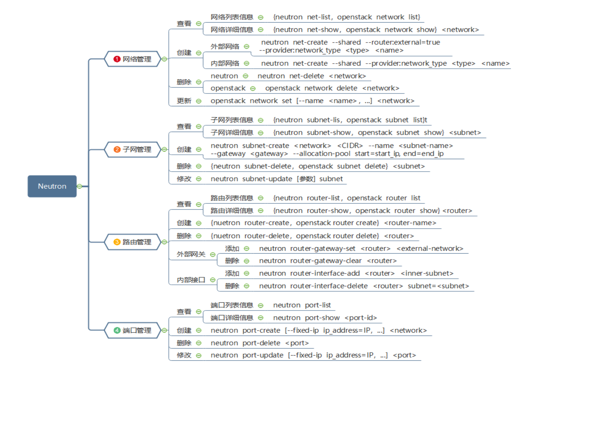

neutron
- 列出系统扩展命令
neutron ext-list -c alias -c name
openstack ext list
- 列出所有网络列表
neutron net-list
openstack network list
创建网络
neutron net-create <网络名字> [--shared] [--router:external=<True/False>] [--provider:network_type <网络类型 gre>]删除网络
neutron net-delete <网络名字>
- 更新网络
openstack network set <网络名字> [--name <新名字>]
- 查看所有子网
neutron subnet-list
- 创建子网
neutron subnet-create <划子网的网络名>
<--name <子网名字>>
<--allocation-pool start=<起始ip>,end=<结束ip>>
[--disable-dhcp/--enable-dhcp]
<--gateway=<网关IP> <网络号，一般.结尾24位>>
例:neutron subnet-create netdemo --name subnet23 --allocation-pool start=192.168.23.1,end=192.168.23.100 --disable-dhcp --gateway=192.168.23.254 192.168.23.0/24
- 查看子网详细信息
neutron subnet-show <子网名>
- 修改子网参数
neutron subnet-update <子网名>
[<--gateway <gayewayip>>/<--no-gateway>]
[--enable-dhcp/--disable-dhcp]
[--allocation-pool start=<起始ip>,end=<结束ip>]
- 新建路由器
neutron router-create <路由器名>
- 路由器添加接口
neutron router-interface-add <路由器名> <子网名>
- 路由器创建端口
neutron prot-create <网络名>
[--name <端口名>]
[--fixed-ip subnet_id=<子网名>,ip_address=<路由器IP>]
